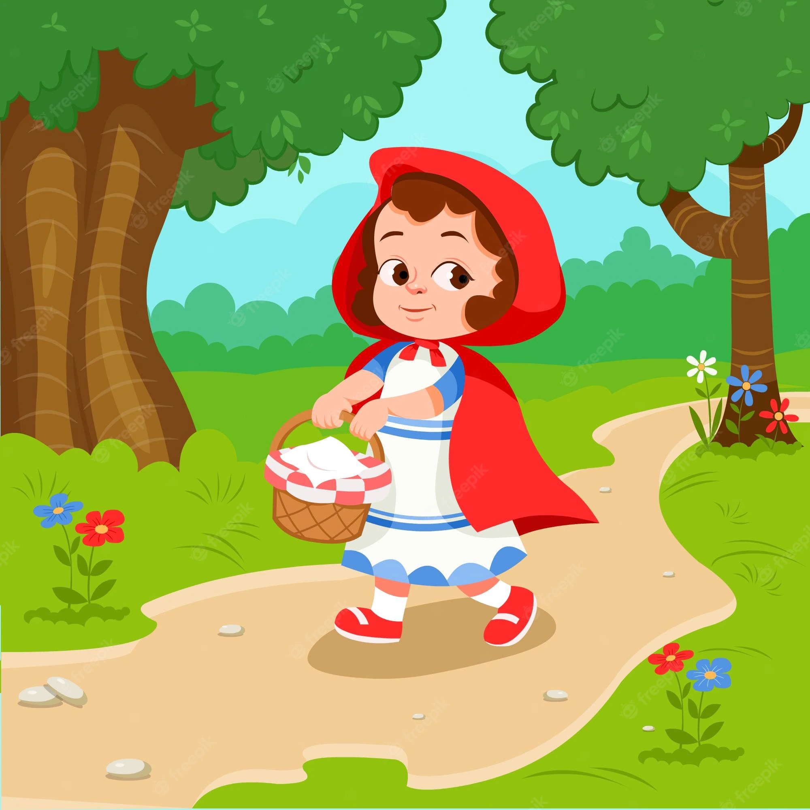

Chapeuzinho Vermelho
Chapeuzinho vermelho era uma linda menina que morava em uma bela casa com a sua mãe. A menina sempre usava uma capa e um pequeno chapéu na cor vermelha.
Um belo dia, sua mãe pediu para que Chapeuzinho Vermelho fosse levar uma
cesta de doces para sua vovó:
– Chapeuzinho, por favor, leve esta linda cesta de doces para sua avó,
mas evite o caminho da floresta, pois ele é muito perigoso. Escolha o
caminho do bosque e não fale com estranhos.
Chapeuzinho amava sua avó e saiu muito rapidamente de casa, cantando de
alegria. Ela queria fazer uma surpresa para sua avó e começou a colher
as flores que encontrava no caminho. A menina estava distraída com as
flores, quando deu de cara com o lobo mau. Chapeuzinho não sabia que
aquele era o lobo malvado, por isso não se assustou e nem sentiu
medo.
– Bom dia, Chapeuzinho Vermelho.
– Bom dia.
– Onde você está indo assim tão cedinho?
– Vou visitar minha vovozinha, que está muito doente.
O lobo esperto disse a ela:
– Por que você não vai pela floresta? A floresta é o caminho mais rápido
para a casa da sua avó.
Ela ficou em dúvida, porque não gostava de desobedecer sua mãe, mas
resolveu seguir o conselho do lobo.
Enquanto chapeuzinho seguia pelo caminho da floresta, o lobo rapidamente
seguiu pelo caminho bosque, cantando e correndo. O lobo chegou na casa
da vovozinha e bateu na porta:
– Quem está aí? — Perguntou a velhinha.
O lobo respondeu, disfarçando a voz:
– Sou eu, Chapeuzinho Vermelho.
– Entre minha querida, a porta está aberta.
O lobo, que era muito rápido, foi entrando e de uma só vez engoliu a
vovozinha. Depois vestiu as roupas dela e ficou a espera de Chapeuzinho
Vermelho.
Chegando na casa da vovó, a menina encontrou o lobo e perguntou:
– Vovó! Porque suas orelhas estão tão grandes?
– É para te ouvir melhor.
– Vovó! Para que esses olhos tão grandes?
– É para te ver melhor.
– Credo, vovó, porque a senhora está com essa boca tão grande?
– É para te comer! — respondeu o lobo.
Dizendo isso, o lobo começou a correr atrás de Chapeuzinho. Depois de
algum tempo, ele tropeçou e caiu no chão. Enquanto isso, a menina se
escondeu dentro de um armário. O lobo resolveu dar uma cochilada e
começou a roncar. Um caçador que passava escutou:
– Que ronco esquisito é este? Ele entrou e encontrou o lobo mal:
– Ah! É você que está aí seu malvado!
Escutando isso, Chapeuzinho apareceu e contou toda a história para o
caçador. Aproveitando que o lobo estava dormindo, cortaram a sua a
barriga e tiraram a vovozinha de dentro. As duas se abraçaram muito
felizes.
– E agora o que faremos com esse malvado?
Os três resolveram encher a barriga do lobo de pedras. Quando o lobo
acordou, tentou fugir, mas ele caiu e nunca mais levantou. Todos ficaram
aliviados e felizes.
O caçador foi embora e as duas foram se sentar na varanda e saborear os
doces. Chapeuzinho prometeu nunca mais desobedecer a sua mãezinha.